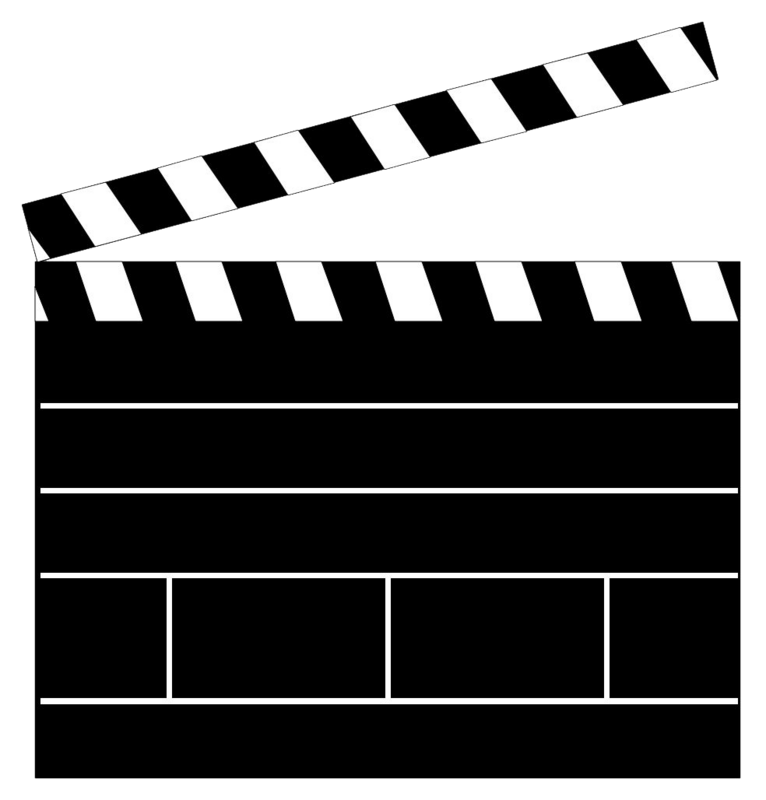

¿QUÉ ES STOP MOTION?
Dentro de las técnicas del Stop Motion podemos encontrar diversos estilos que nos ayudan a alcanzar el tipo de efecto y sensación que se quiere transmitir según el proyecto en el que estamos trabajando. Algunos de estos son:
Prixilación: En este caso lo que se llega a animar son los objetos y las personas.
Go Motion: En esta técnica el objeto a animar se sacude un poco para crear el efecto de desenfoque del movimiento.
Clay animation: Es la animación con plastilina.
Cut-out: Los objetos animados son recortes de papel, cartón, tela posicionados de forma horizontal y fotografiados desde arriba.
Universidad Centroamericana 2021- Trabajo para asignación Digital 3 - Andrea Guevara